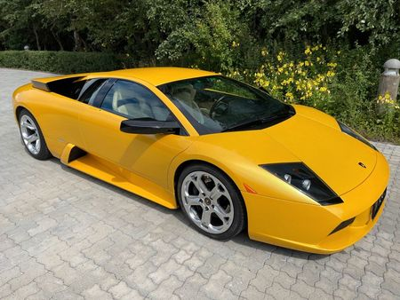

La Lamborghini Murciélago est une autre supercar emblématique et très appréciée produite par Lamborghini.

Années de production :La Lamborghini Murciélago a été en production de 2001 à 2010. Elle a été présentée comme successeur de la Lamborghini Diablo et a finalement été remplacée par la Lamborghini Aventador.
Design : Le Murciélago présente un design saisissant et agressif, avec une position basse et large, des portes ciseaux et un style angulaire. Elle a été conçue par Luc Donckerwolke, alors responsable du design de Lamborghini, et conserve le look distinctif de Lamborghini.
Moteur :La Murciélago est propulsée par un moteur V12 de 6,2 litres monté en position centrale, qui produit entre 570 et 670 chevaux, selon le modèle et le niveau de finition.
Ce moteur puissant offre au Murciélago des performances exaltantes.
Performance :Le Murciélago est connu pour ses incroyables capacités de performances. Il peut accélérer de 0 à 60 mph en 3,4 secondes environ, avec une vitesse de pointe dépassant 200 mph.
La transmission intégrale (avec différentiel central à visco-coupleur) était une caractéristique clé, assurant une excellente traction et stabilité.
Variantes : Au cours de sa production, la Murciélago a eu diverses variantes et éditions spéciales, dont le Murciélago Roadster, le Murciélago LP640, le Murciélago LP670-4 SuperVeloce et d'autres. Ces variantes offraient une puissance accrue, une maniabilité améliorée et des éléments de style uniques.
Intérieur : L'intérieur de la Murciélago perpétue la tradition de Lamborghini consistant à allier luxe et performance. Des matériaux de haute qualité, notamment du cuir et de la fibre de carbone, ont été utilisés pour créer un habitacle confortable et sportif.
Héritage : La Lamborghini Murciélago est une partie importante de l'histoire de Lamborghini et est célébrée pour ses performances, son design et son impact sur l'industrie des supercars. C'était l'un des derniers modèles Lamborghini produits avant l'acquisition de l'entreprise par Audi.
Collection :Les modèles Murciélago bien conservés et à faible kilométrage sont très recherchés par les collectionneurs et les passionnés. Leurs quantités de production limitées et la forte reconnaissance de la marque Lamborghini contribuent à leur attrait sur le marché des voitures de collection.
Successeur : La Lamborghini Aventador a succédé à la Murciélago en 2011, perpétuant la tradition des supercars phares de Lamborghini à moteur V12.
La Lamborghini Murciélago est vénérée pour sa combinaison de puissance brute et de design saisissant, ce qui en fait un symbole d'extravagance et de performance automobile. Elle reste un classique et une étape importante dans l'histoire de Lamborghini.